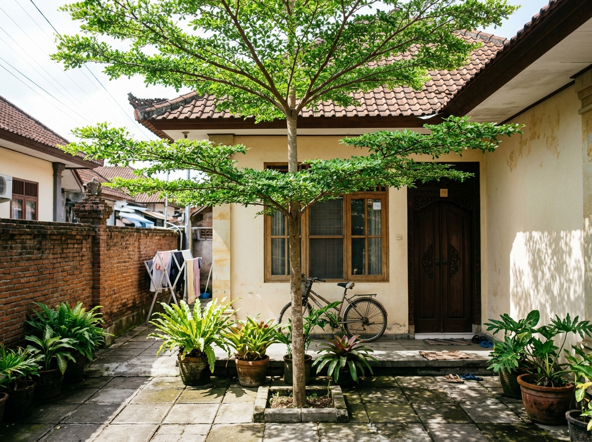
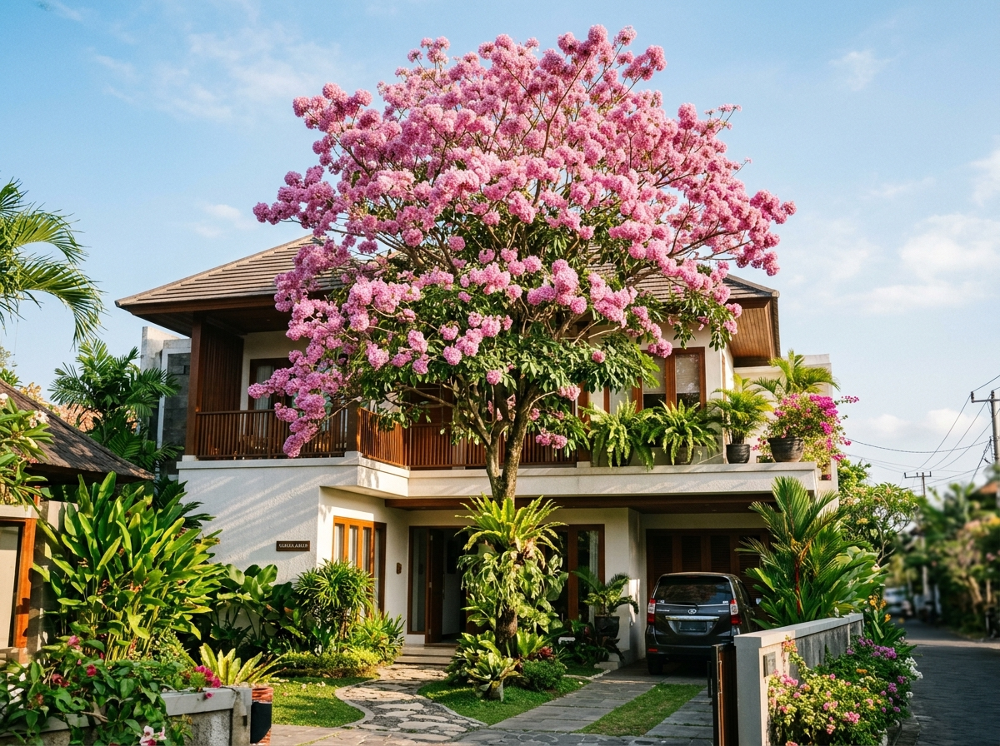

.webp)
Pagi tadi selesai menanam 1 bibit Pohon Tanjung di sudut barat pekarangan rumah. Teras depan yang dulunya kena radiasi pantulan semen 38°C sekarang mulai teduh. Jarak ke pagar 2.2 meter, aman dari saluran got.
 Mas Bima • Jl. Raya Puputan, Renon
Mas Bima • Jl. Raya Puputan, Renon

 Ibu Desak • Jl. Raya Sesetan
Ibu Desak • Jl. Raya Sesetan

 Pak Wayan • Jl. Teuku Umar Barat
Pak Wayan • Jl. Teuku Umar Barat

 dr. Made Ary • Jl. Gatot Subroto Barat
dr. Made Ary • Jl. Gatot Subroto Barat
Pagi tadi selesai menanam 1 bibit Pohon Tanjung di sudut barat pekarangan rumah. Teras depan yang dulunya kena radiasi pantulan semen 38°C sekarang mulai teduh. Jarak ke pagar 2.2 meter, aman dari saluran got.
Untuk gang sempit selebar 3 meter di Sesetan, Ketapang Kencana benar-benar penyelamat. Tajuk bertingkatnya menyaring sinar matahari sore tanpa bikin sempit jalan masuk motor warga.
Setuju Bu Desak! Daunnya juga mudah disapu tiap pagi, tidak bikin becek got.
Banyak tetangga ragu menanam pohon karena takut tembok pagar retak. Ingat kuncinya: pilih pohon dengan tipe akar tunggang (seperti Tanjung atau Tabebuia), bukan akar serabut liar seperti Beringin. Tambahkan pipa biopori vertikal agar air mengalir ke bawah.
Terima kasih infonya Dokter, sangat berguna untuk warga yang pekarangannya full semen.
Bagus sekali Mas Bima. Ditanam dari bibit ukuran berapa meter kemarin? Akarnya langsung tunggang ke bawah ya?
Pakai bibit 1.5 meter Bu. Langsung disiram air cucian beras dan tanah humus subak, cepat kokoh akarnya.